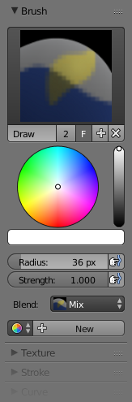

Tools¶
The Tools Shelf contains most of the options for vertex painting. The following sections describe the controls in each of the available panels.

Vertex Painting Options.
Brush¶
- Brush
- The Data-Block menu allows you to select brush presets, as well as custom brushes.
- Color
- Color picker.
- Radius
- Set the radius of the brush
- Strength
- Set the strength of the brush's effect.
- Blend
- Mix
- Mixes RGB values. When set to a strength of 1.0, it will cover the underlying "paint".
- Add
- Adds RGB values. Will eventually turn the entire object white as RGB values accumulate to (1.0, 1.0, 1.0): Pure White.
- Subtract
- Subtracts RGB values. Usually results in Black.
- Multiply
- Multiplies brush colors by the vertex colors.
- Blur
- Blurs vertex colors.
- Lighten
- Lightens the color of the vertices.
- Darken
- Darkens the color of the vertices.